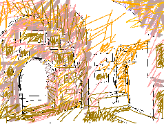

Old Yafa, I speak to you. You are so beautiful. Standing there I used to smile and flirt with the women at their windows behind our house. They laughed delighted. Tamam lived in that house. Not knowing her then, maybe I waved to her. Recently I climbed some steps behind my house and looked at the balcony where I played. I saw strange things built on my balcony. The Israeli woman sitting there said that it was an entertainment restaurant called the Israeli Experience. I will tell you about my home and my 'Israeli Experience'.
On that balcony I played house and invited my sister. Just outside the door I drew out the floor plan with stones and markers like archeological remains. Some late days on that big balcony I collected bullet heads. I would wake my parents to show my handful. Then in 1948 those Israeli bullets turned into bloody massacre. They took our homes, our cities, and our country. They even took the furniture, the clothes, the paintings, and my books and toys. Even our language they steel. Their ancient language, impotent for modern times, they fill with our Arabic words.
Now in 1986 I can imagine what might have been. I dream that for the past 48 years we lived in our Palestine and brought it to the beautiful modern culture we own. "The artists, musicians, and poets I know often come to my studio. But today I am walking out back to visit Tamam in her studio. I approach through a narrow stone-paved street of old Yafa. I take the beautiful flowers for granted. It is the blue on blue of sea and sky and old city shutters that are on my mind."

They made our city into a playground. Tamam's old home is now a tourist gallery. I dream about what was stolen. "Tamam's old family home is now her studio. She has paintings all over. Today Kamal came down from Jerusalem. With familiar gestures we take our seats and sip Tamam's coffee. We talk about her paintings on all the walls". In reality as I stood in that very room I measure the depth of our loss. I looked at the man tending his pictures but I could not bridge the gulf between us. In my minds eye I could still see Tamam's wonderful painting of her home in Yafa titled: "Shoshona Occupies My Studio". The man in the room told me Shoshona lives upstairs and that he now has the gallery. So today Shoshona occupies Tamam's bedrooms.
These are the old steps and the old bakery where Tamam played. We saw them, my sister and I, walking through Yafa. Then we ran into some American tourists. The Israeli guide was telling them how the architecture is influenced by this or that rabbinical idea. Such brazen lies. My sister lost her silence. She quietly told them that this is Arab architecture in this occupied and stolen city of Yafa. The guide looked shamed. Anguished, my sister shook so much that she could not continue. She feared she would pass out. I took up where she left off. The tourists were stunned. Some laughed nervously. I remember how shaken by anger my father would be. He grieves over Yafa. They are so obscene in their lordship that they name taxicab companies after it. In New York there are at least two night spots with Yafa for a name.
Then I went to the heart of what was modern Yafa in 1948. I took a picture of the clock-tower square. I tried to find my father's shop. I looked at the old buildings in such disrepair. The roofs are caved in. Arabs are not allowed to fix their buildings or their homes without a permit from the Israelis. Of course the Israelis do not give permits. They enforce this law until Arab homes are unfit to live in. Then they take them. They also bring tourists and tell them to look at how dirty the Arabs are. It is their dirt and all history will remember this their dirt.
We visited Hasan Bek Mosque. It was Friday and after prayer we went in to talk with the caretakers. They told us that volunteer men came from AlKhalil (what they call Hebron) and fixed the ceiling. It had been allowed to cave in. The Israelis put these men in jail because they fixed the ceiling of their mosque - their place of worship. Later the congregation asked for a permit to fix the compound wall which is in severe disrepair. The Israelis will not give it and they have destroyed all the Arab homes surrounding the mosque. These men told us that in 1948 there were 120 thousand Palestinians Arabs in Yafa. In 1949 there were only three thousand and now they number 17 thousand.
My school mate was one of those three thousand who stayed. The Israelis shot and shot at their home but they refused to leave. They then took her fathers business. But they holed up at home and were very very stubborn. Others who stayed and had their homes shot at continuously did lose family members to Israeli bullets.
I swam in our Mediterranean sea. I made a painting about it once because my favorite dream was of the sea talking to me. I found shards of old tiles. I looked up to find their source and saw a cemetery on a hill of sand. It was sliced by bulldozers. In the fresh slice I saw cross-sections of graves six feet below the surface. The Arab fisherman said that it was an old Arab cemetery called the Kofaliye and then he added accusingly that its owners all left and abandoned it. Poor old fisherman unable to punish the guilty, he, like the Israelis, instead attacks the victims.
Copyright, Samia A. Halaby, 1998, All rights reserved. To request permission to reproduce any part of these pages click above.
Select from the following menu representing the entire studio:
Chapter I ... Grandmother, ... Chapter II ... Beisan, ... Chapter III ... Jerusalem, ... Chapter IV ... Sabah, ... Chapter V ... Yafa, ... Chapter VI ... Khader, ... Chapter VII ... Vera, ... Chapter VIII ... Students, ... Chapter IX ... Taxi, ... Chapter X ... Doctor, ... Chapter XI ... Hasan, ...


![[Art on the Net]](/images/artnet_button.gif)
![[Gallery]](/images/gallery_button.gif)
![[Studios]](/images/studios_button.gif)
![[What's New]](/images/whats_new_button.gif)